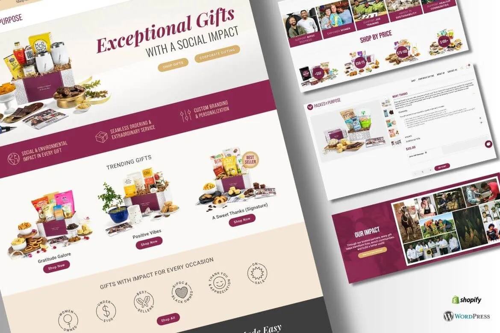
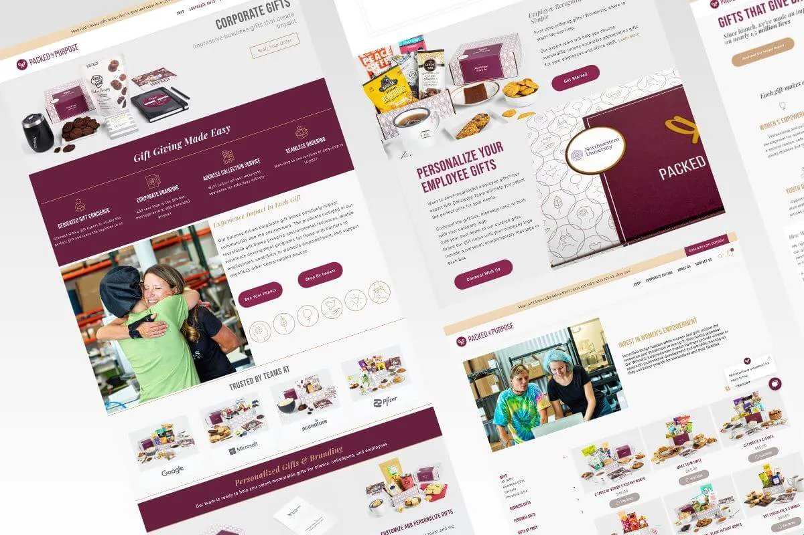

Corporate Gifts E-Commerce Website Migration & Development – Case Study
Client was already running successful WordPress & Shopify websites. However, they were having a really hard time managing the website from their end. We had recommended the Client to use Elementor Pro plugin which will help with easy day to day website maintenance tasks.
We at CloudConverge helped migrate selective website pages of the client to Elementor Pro and helped with replicating changes to Shopify platform. Considering the site had high volume traffic and substantial search engine ranking, the changes were to be implemented with care to ensure that the site ranking does not get adversely impacted through the migration process.

User Experience Design & Migration Journey
Client’s website was setup on Pantheon, the current website layout and pages structure were to be kept intact while adding additional capability for site management team to easily manage the website content easily. Website changes were implemented using the pipeline provided by Pantheon environment.
